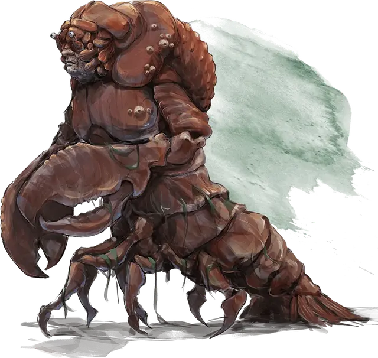

Алдани (Лобстеролюд)
Aldani Lobsterfolk
Средний Монстр, законно-нейтральный

Класс Доспеха 14 (природный доспех)
Хиты 49 (9к8 + 9)
Скорость 20 футов, плавая 30 футов
| мод | спас | ||
|---|---|---|---|
| СИЛ | 13 | +1 | +1 |
| ЛОВ | 8 | −1 | −1 |
| ТЕЛ | 12 | +1 | +1 |
| мод | спас | ||
|---|---|---|---|
| ИНТ | 10 | +0 | +0 |
| МДР | 14 | +2 | +2 |
| ХАР | 10 | +0 | +0 |
Навыки Восприятие +4, Выживание +4
Чувства тёмное зрение 60 футов, пассивное Восприятие 14
Языки Общий
Опасность 1 (200 опыта)
Бонус мастерства +2
Особенности
Амфибия. Алдани может дышать и воздухом и под водой
Действия
Мультиатака. Алдани совершает две атаки клешнями.
Клешня. Рукопашная атака оружием: +3 к попаданию, досягаемость 5 футов, одна цель. Попадание: 5 (1к8 + 1) рубящего урона, и цель схвачена (Сл высвобождения 11). У алдани две клешни, каждой из них он может схватить одну цель
Описание
Многие Чульты могут вспомнить детские сказки об алдани, жутких лобстеролюдах, которые жили в реках и озёрах. Поскольку в течение многих лет никто не видел алдани, распространилось мнение, что они были уничтожены. По правде говоря, многие алдани выжили и отступили к озёрам Бассейна Алдани в самом сердце Чульта. Алдани похож на гигантского, прямоходящего омара. Его лицо, по большей части, закрыто бронёй и выглядит почти гуманоидным, за исключением длинных глаз. Несмотря на их устрашающий вид, алдани избегают конфликтов. Будучи затворниками и ксенофобами, они прячутся в своих озёрах и реках.
Взятка алдани. Если спокойствие алдани нарушено, то они пытаются отпугнуть непрошеных гостей, не убивая их. Столкнувшись с существами, которые не так легко напугать, они предлагают взятки в обмен на то, что их оставят в покое. Эти взятки представляются в виде сокровищ, которые алдани собирают со дна рек и озёр.
Проклят Убтао. Алдани – это чудовищные потомки Чультов, принадлежащих к племени алдани. Рыболовы племени тысячами ловили лобстеров в реках, пока лобстеров совсем не осталось. Их жадность рассердила Убтао, и он проклял рыбаков, превратив их в лобстеров. Рыбаки приняли своё наказание и свою новую сущность. Однако, другие члены племени презирали их, и они были вынуждены найти убежище в реках, которые когда-то разграбили. Хотя племя Алдани вымерло, лобстеролюды остаются до сих пор.